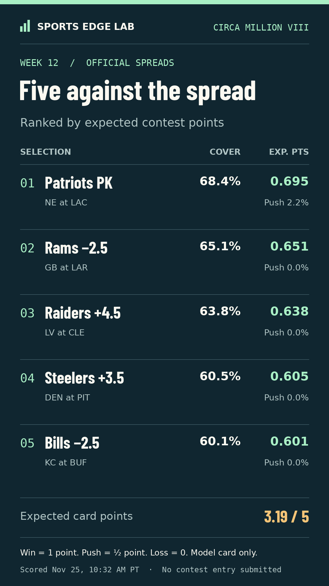
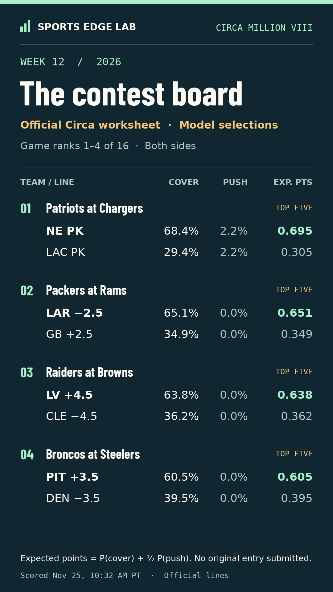
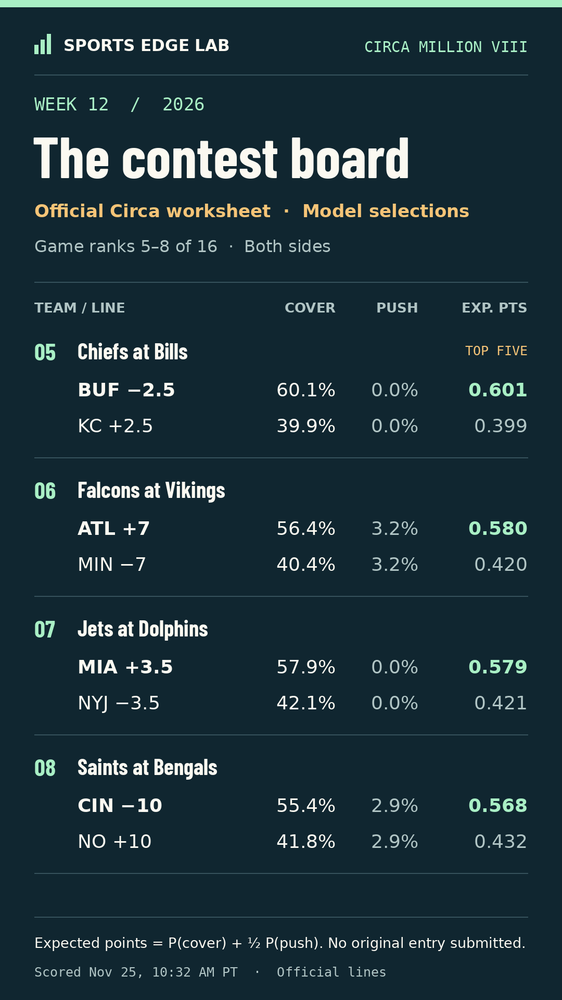
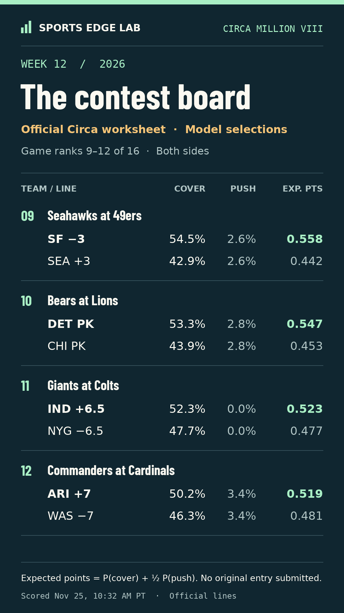
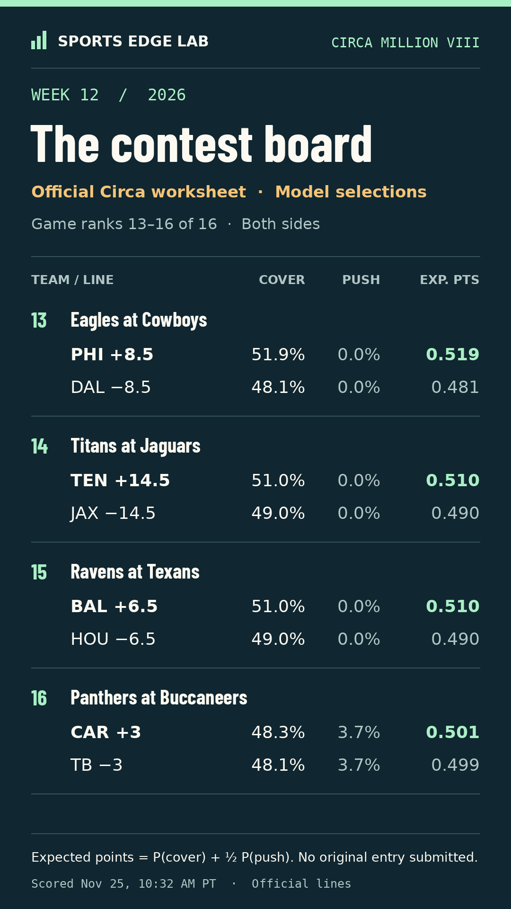

01Top five
NE at LAC
Nov 29, 1:05 PM PT| Side | Cover | Push | Loss | Exp. pts |
|---|---|---|---|---|
| NE PK · selected | 68.4% | 2.2% | 29.4% | 0.695 |
| LAC −0 | 29.4% | 2.2% | 68.4% | 0.305 |
All 16 official Circa Week 12 lines are authenticated. These five model selections are ranked by expected contest points. Verified contest entries: 0.
Official Circa Week 12 worksheet. Printed 9:45 AM Pacific, announced 10:10 AM, verified Nov 25, 10:31 AM PT. The standing validation-selected policy scored the posted spreads Nov 25, 10:32 AM PT, before kickoff. The earlier N190 owner observed no worksheet at 10:03 AM Pacific. The posted PDF and the publisher’s independently posted image agree on all 32 signed handicaps. The recorded digest covers the visual transcription. Zero contest entries were submitted.
Official Circa worksheet ↗ · Original 10:03 AM DraftKings research card and all 32 sides ↗
Each card contains five different games. Selections maximize cover probability plus half the push probability using the validation-selected N190 policy at official Circa worksheet. The N190 comparison selected the N185 policy alone from 129 alternatives. The research card has no entry receipt.
2024 55.5/90 · 2025 52/90 · 2026 previously examined replay 25/55Expected points across these five selections: 3.189 out of 5.
Trace the 28.5-of-45 historical card and team results ↗| Side | Cover | Push | Loss | Exp. pts |
|---|---|---|---|---|
| NE PK · selected | 68.4% | 2.2% | 29.4% | 0.695 |
| LAC −0 | 29.4% | 2.2% | 68.4% | 0.305 |
| Side | Cover | Push | Loss | Exp. pts |
|---|---|---|---|---|
| GB +2.5 | 34.9% | 0.0% | 65.1% | 0.349 |
| LAR −2.5 · selected | 65.1% | 0.0% | 34.9% | 0.651 |
| Side | Cover | Push | Loss | Exp. pts |
|---|---|---|---|---|
| LV +4.5 · selected | 63.8% | 0.0% | 36.2% | 0.638 |
| CLE −4.5 | 36.2% | 0.0% | 63.8% | 0.362 |
| Side | Cover | Push | Loss | Exp. pts |
|---|---|---|---|---|
| DEN −3.5 | 39.5% | 0.0% | 60.5% | 0.395 |
| PIT +3.5 · selected | 60.5% | 0.0% | 39.5% | 0.605 |
| Side | Cover | Push | Loss | Exp. pts |
|---|---|---|---|---|
| KC +2.5 | 39.9% | 0.0% | 60.1% | 0.399 |
| BUF −2.5 · selected | 60.1% | 0.0% | 39.9% | 0.601 |
| Side | Cover | Push | Loss | Exp. pts |
|---|---|---|---|---|
| ATL +7 | 56.4% | 3.2% | 40.4% | 0.580 |
| MIN −7 | 40.4% | 3.2% | 56.4% | 0.420 |
| Side | Cover | Push | Loss | Exp. pts |
|---|---|---|---|---|
| NYJ −3.5 | 42.1% | 0.0% | 57.9% | 0.421 |
| MIA +3.5 | 57.9% | 0.0% | 42.1% | 0.579 |
| Side | Cover | Push | Loss | Exp. pts |
|---|---|---|---|---|
| NO +10 | 41.8% | 2.9% | 55.4% | 0.432 |
| CIN −10 | 55.4% | 2.9% | 41.8% | 0.568 |
| Side | Cover | Push | Loss | Exp. pts |
|---|---|---|---|---|
| SEA +3 | 42.9% | 2.6% | 54.5% | 0.442 |
| SF −3 | 54.5% | 2.6% | 42.9% | 0.558 |
| Side | Cover | Push | Loss | Exp. pts |
|---|---|---|---|---|
| CHI PK | 43.9% | 2.8% | 53.3% | 0.453 |
| DET −0 | 53.3% | 2.8% | 43.9% | 0.547 |
| Side | Cover | Push | Loss | Exp. pts |
|---|---|---|---|---|
| NYG −6.5 | 47.7% | 0.0% | 52.3% | 0.477 |
| IND +6.5 | 52.3% | 0.0% | 47.7% | 0.523 |
| Side | Cover | Push | Loss | Exp. pts |
|---|---|---|---|---|
| WAS −7 | 46.3% | 3.4% | 50.2% | 0.481 |
| ARI +7 | 50.2% | 3.4% | 46.3% | 0.519 |
| Side | Cover | Push | Loss | Exp. pts |
|---|---|---|---|---|
| PHI +8.5 | 51.9% | 0.0% | 48.1% | 0.519 |
| DAL −8.5 | 48.1% | 0.0% | 51.9% | 0.481 |
| Side | Cover | Push | Loss | Exp. pts |
|---|---|---|---|---|
| TEN +14.5 | 51.0% | 0.0% | 49.0% | 0.510 |
| JAX −14.5 | 49.0% | 0.0% | 51.0% | 0.490 |
| Side | Cover | Push | Loss | Exp. pts |
|---|---|---|---|---|
| BAL +6.5 | 51.0% | 0.0% | 49.0% | 0.510 |
| HOU −6.5 | 49.0% | 0.0% | 51.0% | 0.490 |
| Side | Cover | Push | Loss | Exp. pts |
|---|---|---|---|---|
| CAR +3 | 48.3% | 3.7% | 48.1% | 0.501 |
| TB −3 | 48.1% | 3.7% | 48.3% | 0.499 |
No contest games match these filters.

Official-line top fiveValidated policy · 10:32 AM Pacific
Official sides · page 1Both sides of four games · 1 of 4
Official sides · page 2Both sides of four games · 2 of 4
Official sides · page 3Both sides of four games · 3 of 4
Official sides · page 4Both sides of four games · 4 of 4The policy was selected on 2024 and 2025, using equal weight for the two seasons. N188 compared 21 policies across 3,205,839 five-game portfolios. Each card includes one side in five distinct games. A win earns one point, a push earns half a point and a loss earns zero. Points measure contest performance. Cash returns depend on actual entry and contest results.
| Season | Weeks | Wins | Losses | Pushes | Contest points | 4+ wins | 5–0 |
|---|---|---|---|---|---|---|---|
| 2024 | 18 | 55 | 34 | 1 | 55.5/90 | 4 | 0 |
| 2025 | 18 | 52 | 38 | 0 | 52/90 | 6 | 1 |
| 2026 | 11 | 24 | 29 | 2 | 25/55 | 2 | 0 |
These records replay authenticated historical weekly contest lines. All 11 completed 2026 weeks were scored after the selection lock. Verified original entries in this comparison: 0.
| Week | Five distinct teams | W–L–P | Points / five | Expected points |
|---|---|---|---|---|
| 1 | DEN · JAX · HOU · MIA · MIN | 2–3–0 | 2/5 | 3.129 |
| 2 | ATL · SEA · JAX · MIA · MIN | 2–3–0 | 2/5 | 3.301 |
| 3 | CHI · MIA · NYG · HOU · BUF | 3–2–0 | 3/5 | 3.175 |
| 4 | CHI · NYG · SEA · TB · LV | 4–0–1 | 4.5/5 | 3.353 |
| 5 | NE · JAX · CHI · BAL · NYG | 3–2–0 | 3/5 | 3.208 |
| 6 | NYG · SF · NE · TB · BUF | 0–4–1 | 0.5/5 | 3.117 |
| 7 | NYG · PHI · SEA · NE · CAR | 2–3–0 | 2/5 | 3.289 |
| 8 | PHI · DEN · BUF · TEN · PIT | 4–1–0 | 4/5 | 3.057 |
| 9 | BAL · MIN · HOU · ATL · NE | 1–4–0 | 1/5 | 3.047 |
| 10 | BUF · TEN · NYG · ARI · IND | 1–4–0 | 1/5 | 3.020 |
| 11 | ARI · NO · SF · IND · TB | 2–3–0 | 2/5 | 2.973 |
| Week | Five distinct teams | W–L–P | Points / five | Expected points |
|---|---|---|---|---|
| 1 | LAC · DET · CIN · SEA · WAS | 2–3–0 | 2/5 | 3.199 |
| 2 | MIA · CIN · SEA · TB · PHI | 4–1–0 | 4/5 | 2.993 |
| 3 | SEA · MIA · DET · WAS · PHI | 5–0–0 | 5/5 | 3.143 |
| 4 | DET · DAL · NO · BAL · CAR | 3–2–0 | 3/5 | 2.955 |
| 5 | BAL · ARI · NYJ · MIN · CAR | 2–3–0 | 2/5 | 3.285 |
| 6 | BAL · SEA · DET · WAS · CIN | 2–3–0 | 2/5 | 3.340 |
| 7 | NYJ · DEN · ARI · WAS · CHI | 2–3–0 | 2/5 | 2.982 |
| 8 | WAS · TB · HOU · MIN · NYJ | 3–2–0 | 3/5 | 3.167 |
| 9 | BUF · CIN · MIA · CAR · DET | 2–3–0 | 2/5 | 3.227 |
| 10 | HOU · MIA · NYJ · CAR · LAC | 4–1–0 | 4/5 | 3.270 |
| 11 | CIN · MIA · ARI · TB · CHI | 2–3–0 | 2/5 | 3.149 |
| 12 | TEN · CLE · HOU · DET · ATL | 4–1–0 | 4/5 | 3.191 |
| 13 | NE · DEN · LAC · CAR · BAL | 3–2–0 | 3/5 | 3.058 |
| 14 | BUF · DET · LAC · GB · JAX | 4–1–0 | 4/5 | 3.095 |
| 15 | IND · DET · DEN · CHI · SF | 4–1–0 | 4/5 | 3.073 |
| 16 | MIA · IND · NYJ · ARI · LAC | 1–4–0 | 1/5 | 3.269 |
| 17 | KC · MIA · WAS · TEN · BUF | 3–2–0 | 3/5 | 3.552 |
| 18 | LAC · LAR · BUF · PHI · GB | 2–3–0 | 2/5 | 3.361 |
| Week | Five distinct teams | W–L–P | Points / five | Expected points |
|---|---|---|---|---|
| 1 | PIT · BUF · DAL · BAL · NO | 3–2–0 | 3/5 | 3.465 |
| 2 | TEN · GB · BUF · LAR · CHI | 3–2–0 | 3/5 | 3.360 |
| 3 | LV · NO · BUF · KC · GB | 3–2–0 | 3/5 | 3.391 |
| 4 | TB · LAC · NO · DET · LV | 4–0–1 | 4.5/5 | 3.233 |
| 5 | CHI · DAL · MIN · LV · TB | 3–2–0 | 3/5 | 3.152 |
| 6 | NO · DEN · CHI · CLE · GB | 3–2–0 | 3/5 | 3.345 |
| 7 | PIT · NO · NYG · CLE · DET | 2–3–0 | 2/5 | 3.315 |
| 8 | PIT · TB · WAS · NO · ARI | 3–2–0 | 3/5 | 3.369 |
| 9 | BUF · SEA · HOU · DAL · CAR | 1–4–0 | 1/5 | 3.197 |
| 10 | LAR · DAL · CAR · ARI · JAX | 3–2–0 | 3/5 | 3.451 |
| 11 | BAL · BUF · DAL · IND · LAC | 3–2–0 | 3/5 | 3.081 |
| 12 | CAR · GB · DAL · IND · HOU | 3–2–0 | 3/5 | 3.201 |
| 13 | DET · DEN · NO · GB · BUF | 3–2–0 | 3/5 | 3.296 |
| 14 | DAL · TB · PIT · JAX · DET | 3–2–0 | 3/5 | 3.155 |
| 15 | NYG · NO · DEN · DAL · MIN | 4–1–0 | 4/5 | 3.375 |
| 16 | DEN · KC · WAS · CIN · CAR | 4–1–0 | 4/5 | 3.012 |
| 17 | TB · CLE · BUF · JAX · LAC | 4–1–0 | 4/5 | 3.173 |
| 18 | PHI · LAR · KC · HOU · BUF | 3–2–0 | 3/5 | 3.636 |
Current card observation: All 16 official Circa Week 12 lines are authenticated. These five model selections are ranked by expected contest points. Verified contest entries: 0.
The Wednesday worksheet was scheduled for Nov 25 at 10:00 AM PT. Its complete, signed Week 12 lines were unverified at this observation. The 32 hypothetical sides below use DraftKings reference spreads observed Nov 25, 10:03 AM PT. Verified contest entries: 0.
Official Circa Million contest and rules ↗The historical N121 ridge model scored 28.5 points in the first nine weeks of 2026. It then went 0–5 and 2–3, bringing it to 30.5/55. On those eleven weeks, switching N121 between the historical margin-edge ranking and the current probability ranking changed two picks and left its points unchanged. Switching the standing N185 model back to margin edge gained two points.
| Policy | 2024 points | 2025 points | 2026 points | 2026 old rule | 4+ win weeks | 5-win weeks |
|---|---|---|---|---|---|---|
| Standing N185 | 55.5/90 | 52/90 | 25/55 | 27/55 | 2/11 | 0/11 |
| Challenger N186 | 52/90 | 52/90 | 25.5/55 | 25.5/55 | 2/11 | 1/11 |
| Historical N121 | 43.5/90 | 40.5/90 | 30.5/55 | 30.5/55 | 4/11 | 1/11 |
Annual columns use the current ranking at official lines. The 2026 old-rule column ranks by the historical margin edge. Both rules award one point for a win and half for a push. All 47 weeks are reconstructed. No original entry has been verified. The 2026 results were previously inspected.
In eleven standing-policy cards, the Giants led with four wins in six picks. Slot five went 6–5. On the historical N121 cards, Arizona led with four wins in six picks. Slots four and five each went 8–3. Records below show wins–losses–pushes using the current rule.
| 2026 picks | Standing N185 | Challenger N186 | Historical N121 |
|---|---|---|---|
| Slot 1 | 5–6–0 | 5–6–0 | 2–8–1 |
| Slot 2 | 5–6–0 | 4–6–1 | 5–6–0 |
| Slot 3 | 5–4–2 | 4–7–0 | 7–4–0 |
| Slot 4 | 3–8–0 | 5–6–0 | 8–3–0 |
| Slot 5 | 6–5–0 | 7–4–0 | 8–3–0 |
| 2026 picks | Standing N185 | Challenger N186 | Historical N121 |
|---|---|---|---|
| Home | 15–17–2 | 14–18–0 | 12–14–1 |
| Away | 9–12–0 | 11–11–1 | 18–10–0 |
| 2026 picks | Standing N185 | Challenger N186 | Historical N121 |
|---|---|---|---|
| Favorite | 13–9–2 | 14–12–1 | 3–0–0 |
| Underdog | 11–20–0 | 11–17–0 | 27–24–1 |
| Pick’Em | — | — | — |
| 2026 picks | Standing N185 | Challenger N186 | Historical N121 |
|---|---|---|---|
| ARI | 0–2–0 | 1–4–0 | 4–2–0 |
| ATL | 0–2–0 | 0–1–0 | 0–3–0 |
| BAL | 1–1–0 | 2–1–0 | 1–1–0 |
| BUF | 3–1–0 | — | — |
| CAR | 0–1–0 | 1–1–0 | — |
| CHI | 2–1–0 | 1–0–0 | 1–0–0 |
| CIN | — | 1–0–1 | — |
| CLE | — | — | 2–0–0 |
| DAL | — | 1–2–0 | 0–1–0 |
| DEN | 1–1–0 | — | 1–0–0 |
| DET | — | 0–2–0 | — |
| GB | — | 1–1–0 | 1–0–0 |
| HOU | 1–2–0 | 1–1–0 | — |
| IND | 0–2–0 | 0–1–0 | 3–3–0 |
| JAX | 1–2–0 | 1–2–0 | 1–0–0 |
| KC | — | 1–0–0 | — |
| LAR | — | 1–0–0 | — |
| LAC | — | — | 0–1–0 |
| LV | 1–0–0 | 1–1–0 | — |
| MIA | 0–3–0 | 1–2–0 | 2–5–1 |
| MIN | 2–1–0 | 2–0–0 | — |
| NE | 1–2–1 | 0–2–0 | 2–0–0 |
| NO | 1–0–0 | 0–1–0 | 1–0–0 |
| NYG | 4–2–0 | 2–0–0 | 3–0–0 |
| NYJ | — | 1–1–0 | — |
| PHI | 0–2–0 | — | 2–4–0 |
| PIT | 1–0–0 | 1–0–0 | 1–1–0 |
| SEA | 2–0–1 | 0–1–0 | 1–0–0 |
| SF | 1–1–0 | 1–1–0 | — |
| TB | 1–2–0 | 1–1–0 | 1–2–0 |
| TEN | 1–1–0 | 1–2–0 | 2–1–0 |
| WAS | — | 2–1–0 | 1–0–0 |
A dash means the policy selected that team zero times. A pick is graded against the official contest spread.